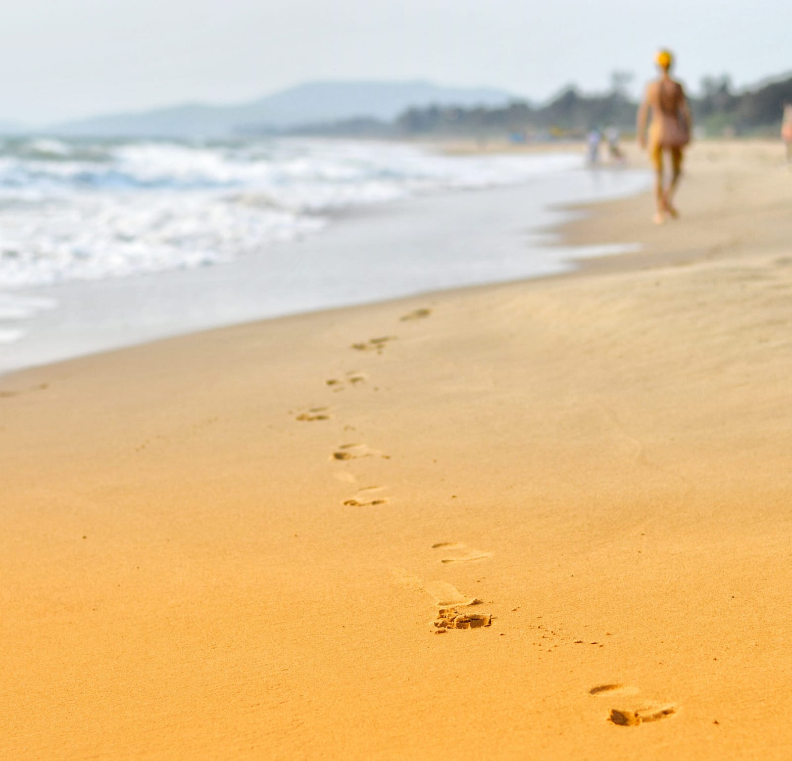

MINIMAL
הדרך צילום שלי
בצילומים שלי אני משתדל להעביר את ההרגשה של אותו רגע
לתפוס את הרגע המיוחד.
על עבודתי
כל מקום שאני הולך, המצלמה איתי
בשביל שאוכל לתפוס רגעים מיוחדים.
בשביל ליצור קשר איתי
כדי להשאיר לי מיילים מסודרים, כי אני לא תמיד זמין
לפעמים אני נוסע למקומות רחוקים ללא קליטה ולכמה ימים,
לכן כדי להשאיר מייל, כאשר אחזור להיות מחובר אסתכל.
תמונות מהעולם
תמונות של עבודתי